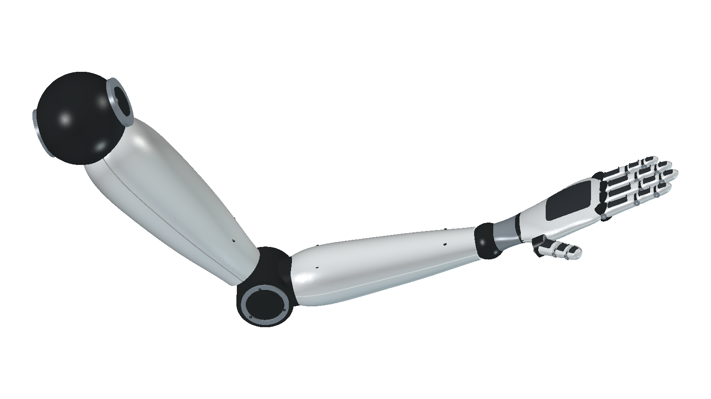

Geometry prepared; native SOLIDWORKS work pending. This is a checked STEP transfer from FreeCAD. SOLIDWORKS import, articulation, motion studies and structural tests have not run.

Open assembled STEP reference · Read complete handoff · Joint schedule · Component explanations · Assembly transforms · Reimport evidence
All 28 exported link files were reimported with FreeCAD/OpenCascade. Solid counts, positive volume, geometry validity, local bounds and reconstructed world centroids passed. Maximum relative volume change: 8.96e-07; maximum reconstructed centroid difference: 1.64e-05 mm. These are CAD translation checks, not SOLIDWORKS simulation results.
| Child link | Parent link | Bodies | File |
|---|---|---|---|
| base_link | Fixed world | 1 | STEP |
| shoulder_abduction | base_link | 5 | STEP |
| shoulder_flexion | shoulder_abduction | 1 | STEP |
| upper_arm | shoulder_flexion | 13 | STEP |
| elbow_link | upper_arm | 11 | STEP |
| forearm | elbow_link | 69 | STEP |
| wrist_pitch | forearm | 4 | STEP |
| palm_base | wrist_pitch | 13 | STEP |
| index_knuckle | palm_base | 1 | STEP |
| index_proximal | index_knuckle | 12 | STEP |
| index_intermediate | index_proximal | 12 | STEP |
| index_distal | index_intermediate | 10 | STEP |
| middle_knuckle | palm_base | 1 | STEP |
| middle_proximal | middle_knuckle | 12 | STEP |
| middle_intermediate | middle_proximal | 12 | STEP |
| middle_distal | middle_intermediate | 10 | STEP |
| ring_knuckle | palm_base | 1 | STEP |
| ring_proximal | ring_knuckle | 12 | STEP |
| ring_intermediate | ring_proximal | 12 | STEP |
| ring_distal | ring_intermediate | 10 | STEP |
| pinky_knuckle | palm_base | 1 | STEP |
| pinky_proximal | pinky_knuckle | 12 | STEP |
| pinky_intermediate | pinky_proximal | 12 | STEP |
| pinky_distal | pinky_intermediate | 10 | STEP |
| thumb_opposition | palm_base | 2 | STEP |
| thumb_metacarpal | thumb_opposition | 12 | STEP |
| thumb_proximal | thumb_metacarpal | 12 | STEP |
| thumb_distal | thumb_proximal | 10 | STEP |
SOLIDWORKS TRANSFER — ANTHRO ARM 27 STATUS Prepared on D: from the existing FreeCAD V3 design. This package contains neutral STEP geometry and the assembly definition. SOLIDWORKS is not installed/licensed for this work yet. No native SLDPRT, SLDASM, mates, motion study, FEA result or SOLIDWORKS test result is claimed. No cloud upload has been performed by this script. WHAT IS HERE full_arm_home_reference.step: all 293 solids in their existing assembled home pose. links/: 28 individual rigid-link STEP files, each in its local coordinate frame. joint_schedule.csv: 27 joints, parent-child order, axes, positions, angular limits. assembly_manifest.json: full transform matrices for automatic assembly placement. component_inventory.csv: all 293 bodies with short component explanations. transfer_validation.json: actual FreeCAD/OpenCascade reimport checks for every link. preview.png: existing FreeCAD CAD rendering, NOT a SOLIDWORKS screenshot. UNITS AND FRAMES STEP dimensions and matrix translations are millimetres. Do not scale by 1000. Angles have explicit radian and degree fields. Each link's local +Z points toward the fingertips, +X toward the palm, and +Y toward the thumb/index side. The shoulder base is at world [0,0,1080] mm with an X rotation of 180 degrees, so the zero-pose arm hangs down. The supplied reference is the bent home pose, not the zero pose. Matrices use column vectors: p_world = R * p_local + translation. FIRST VISUAL IMPORT Open full_arm_home_reference.step in SOLIDWORKS, inspect the STEP import options, and verify millimetres and 293 solid bodies. Run Import Diagnostics and inspect any healing before saving to a new native file. Compare the silhouette with preview.png. This gives a reviewable static import; it does not create articulation. BUILD THE ARTICULATED ASSEMBLY 1. Open each file in links/ as one multibody part. If the importer recognizes a STEP assembly, choose its mapping to a multibody part. Preserve the original origin/orientation and named bodies. Save each as its own SLDPRT under a new native/ folder on D:. These are imported B-rep features, not original sketches and loft feature history. The editable procedural design remains in FreeCAD. 2. Create an SLDASM and insert all 28 link parts. Keep the bodies within each link rigid; do not give 293 shell panels and fasteners independent moving joints. 3. Position each part using world_from_link_home_matrix_mm from the manifest. Fix only base_link to the world fixture. Verify the home pose against the reference. These JSON transforms are assembly data, not a ready-to-run SOLIDWORKS macro. 4. In parent-child order, construct reference axes at each joint's origin using origin_xyz_mm, origin_rpy_deg and axis_joint_local. The manifest also gives the same axis in parent coordinates. Use datum axes/planes when a decorative shell face does not represent the true joint axis. Do not use guessed visual axes. 5. Add one revolute/hinge relationship per row in joint_schedule.csv. Constrain relative translation and axis tilt while leaving exactly one rotation free. Set the stated angle limits and a named angular zero reference. Confirm the sign with a small positive jog. Shoulder axes and MCP axes intentionally share centers but belong to separate serial links; do not merge those carriers. 6. Check 27 independent rotational degrees of freedom before adding motors. An unexpectedly rigid joint usually indicates a fixed component, rigid nested subassembly, duplicate mate or angle constraint locking the desired motion. 7. Save the assembly and record all import warnings and mate errors. This work is still pending a licensed SOLIDWORKS session; no fabricated completion is implied. PROPOSED TESTS INSIDE SOLIDWORKS — ALL PENDING A. Import: confirm 28 link parts / 293 bodies, millimetres, valid solids and origin placement. Compare outer dimensions and a known phalanx length with source CAD. B. Kinematics: from home, jog each of the 27 axes individually. Confirm direction, travel limits and parent-child motion, then play open/fist/pinch/point poses. C. Interference: test neutral and representative bent poses. Classify expected contact separately from unintended shell collisions. Existing concept motor envelopes and cable routes may intersect; they are not production packaging. D. Motion Analysis, if included in the license: specify mass/inertia, gravity, motor motion and suitable contacts; inspect tracking, reactions and solver convergence. Prescribed animation alone is not a dynamic simulation result. E. Structural FEA, if licensed: begin with a real single-finger part after its material, pin/bearing support, tendon load and manufacturing details are chosen. Refine the mesh and compare stress/displacement convergence. Arbitrary loads or material assignments would not qualify the arm's load capacity. F. Camera-guided motion: the existing OpenCV/MuJoCo camera controller is external. Importing STEP does not transfer vision, Python control or autonomous behavior. A SOLIDWORKS control/API bridge and validated test case would be separate work. ENGINEERING LIMITS The 27 commanded simulation axes are a kinematic target. The motor bodies, reducer envelopes, cable paths and some bearing interfaces remain concepts. STEP validity does not prove manufacturability, strength, assembly fit, contact clearance or physical safety. Simulation effort limits in the schedule are NOT hardware ratings. The separate one-finger prototype is documented in the existing D:\RoboticArm project. OFFICIAL REFERENCES SOLIDWORKS STEP import options and body names: https://help.solidworks.com/2025/english/SolidWorks/sldworks/t_reading_step_iges_acis_sw.htm SOLIDWORKS hinge mates, angular limits and Motion requirement: https://help.solidworks.com/2025/english/SolidWorks/motionstudies/t_hinge_mates.htm These official help search results were checked during preparation. Actual option labels and availability must be verified in the SOLIDWORKS version used.